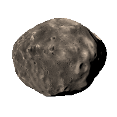

Phobos is the larger of Mars' two moons and is 17 x 14 x 11 miles (27 by 22 by 18 kilometers) in diameter. It orbits Mars three times a day, and is so close to the planet's surface that in some locations on Mars it cannot always be seen.
Phobos was nearly shattered by a giant impact, and has gouges from thousands of meteorite impacts.
Phobos is on a collision course with Mars. It's nearing Mars at a rate of six feet (1.8 meters) every hundred years. At that rate, the moon will either crash into Mars in 50 million years or break up into a ring.
The most prominent feature on Mars' moon Phobos is Stickney crater. It has a diameter of 5.6 miles (9 kilometers).
NASA/JPL-Caltech/University of Arizona
The most prominent feature on Phobos is Stickney Crater, which is named for Chloe Angeline Stickney Hall, mathematician and wife of astronomer Asaph Hall. Asaph Hall discovered both the Red Planet's moons in 1877.
Stickney crater is about 6-miles (9.7 kilometers) wide, and takes up about half the moon's surface. NASA Mars Global Surveyor took images of the crater, and it appears to be filled with fine dust, with evidence of boulders sliding down its sloped surface.
Phobos and Deimos appear to be composed of C-type rock, similar to blackish carbonaceous chondrite asteroids. Observations by Mars Global Surveyor indicate that the surface of this small body has been pounded into powder by eons of meteoroid impacts, some of which started landslides that left dark trails marking the steep slopes of giant craters.
Measurements of the day and night sides of Phobos show such extreme temperature variations that the sunlit side of the moon rivals a pleasant winter day in Chicago, while only a few kilometers away, on the dark side of the moon, the climate is more harsh than a night in Antarctica. High temperatures for Phobos were measured at 25 degrees Fahrenheit (-4 degrees Celsius) and lows at -170 degrees Fahrenheit (-112 degrees Celsius). This intense heat loss is likely a result of the fine dust on Phobos' surface, which is unable to retain heat.
Phobos has no atmosphere. It may be a captured asteroid, but some scientists show evidence that contradicts this theory.
How Phobos Got its Name
Phobos was discovered on Aug. 17, 1877 by Asaph Hall. Hall named Mars' moons for the mythological sons of Ares, the Greek counterpart of the Roman god, Mars. Phobos means fear, and is the brother of Deimos.